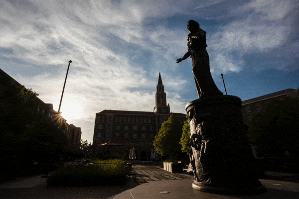

Campus Gone Quiet
With more than 48,000 students spanning two campuses in the heart of Los Angeles, USC comprises an energized, hardworking student body, which moves in a constant frenzy from class to work every day.
This usual campus rhythm has since transformed to a humdrum due to the coronavirus pandemic. Save for the dozens of essential workers and nearly 1,400 students still on campus, typical hotspots, leisure areas and study spaces are left barren. From the bustling Trousdale Parkway to the tucked-away Scene Dock Theatre, nearly all activity across the University has been erased. With the status of in-person classes for the fall semester uncertain, here is a glimpse into what the campus has looked like while the bulk of its community has been away.
Photos by James Wolfe, Photo Editor

Hecuba
Little human presence is found at USC Village, even on bright, sunny days.

mobile test0
Hahn Plaza
One of the busiest parts of campus on a normal day, Hahn Plaza has gotten next to no visitors recently as in-person tours have been canceled and postponed and campus access has been limited.

McCarthy Quad
Commonly passed through by students on their way to class and the location of numerous concerts and festivals at USC, McCarthy Quad now serves neither purpose.

Childs Way
Childs Way’s narrow pathway typically causes a traffic jam for students walking, biking and boarding to class. Now, stomping feet and whirling wheels are nowhere in sight.

Village square
The picnic tables at USC Village, normally a popular lunch spot and gathering place for students, now sit alone, vacant.

USC Village
The West Jefferson intersection once acted as a gateway for students grabbing a bite to eat, shopping or returning to their apartments in USC Village.

Starbucks at USC Village
Usually bustling with caffeine-craving students, Starbucks at USC Village is desolate, the hum of the machines gone quiet.

West 34th Street
En route to USC Village, West 34th Street was a hub for USC buses headed toward the Health Sciences Campus, USC City Center and Union Station.

VKC
The only movement outside these once busy classrooms is the waving of the flags blown by the wind.

Fertitta Hall
The sun shines on the empty courtyard in front of the building, the doors of which remain untouched.

USC Bookstore
The steps of the bookstore no longer host quick afternoon lunches or meetups with friends.

Wallis Annenberg Hall
Once a hotspot for students heading to class, the building receives only a few passerbys.

Watt Way
Once teeming with students, tourists and Lyfts, a street inside campus that lines a few of the engineering and science buildings is now absent of cars and pedestrians.

Engineering Quad
Previously a quiet study spot, the e-quad is now completely desolate.

Parkside Restaurant and Grill
Students swarmed the dining hall for its food and soft-serve ice cream. Now, only USC Village dining hall remains open.

Dedeaux Field
Safer-at-home orders don’t include home plate, as the best seats in the house at Dedeaux Field lie empty.

Hahn Plaza
Traveler overlooks a deserted Student Union and a Hahn Plaza Fountain that has since stopped flowing.

Ronald Tutor Campus Center
The umbrellas outside the Ronald Tutor Campus Center remain closed, no longer providing shade to students basking under the L.A. sun.

Taper Hall
The book is closed this spring on Taper Hall, the epicenter of USC’s English and literature classes.